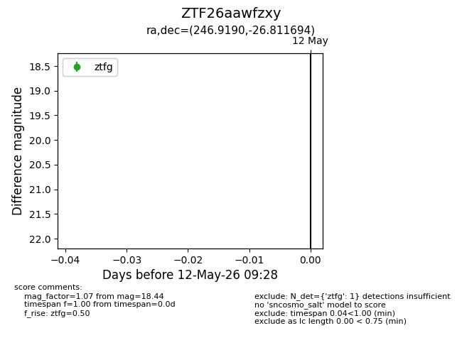
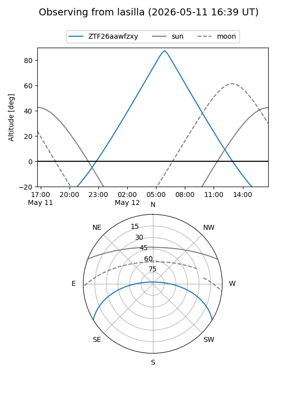
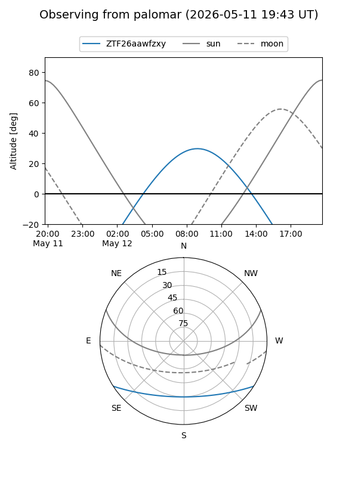

ZTF26aawfzxy
Target ZTF26aawfzxy at 2026-05-12 09:30
Aliases and brokers:
FINK: link
Lasair: link
ALeRCE: link
alt names
ZTF26aawfzxy (ztf,fink_ztf)
Coordinates:
equatorial (ra, dec) = 246.9190,-26.81169
equatorial (HMS+DMS) = 16:27:40.55,-26:48:42.10
galactic (l, b) = (351.3870,+15.10209)
Flags:
Photometry:
last ztfg=18.44
1 ztfg detections
Lightcurve

Visibility


Additional plots